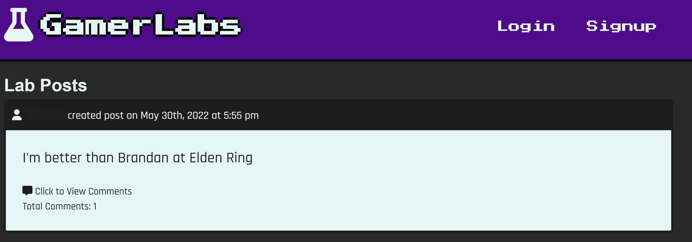
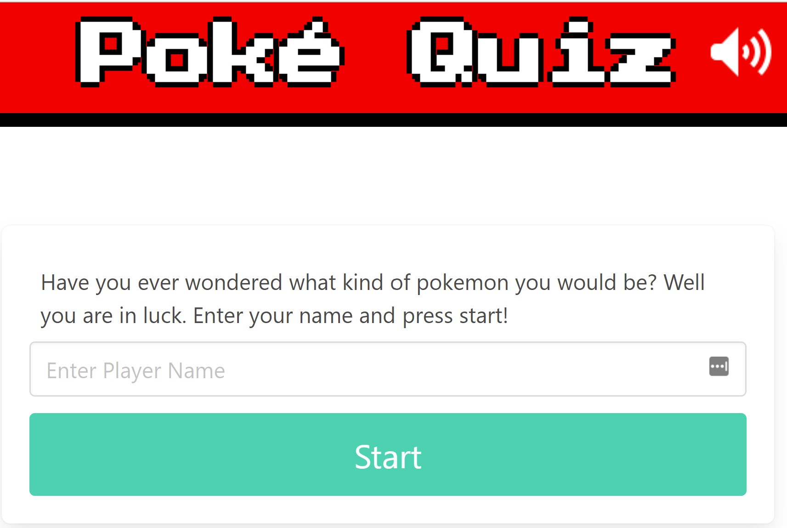
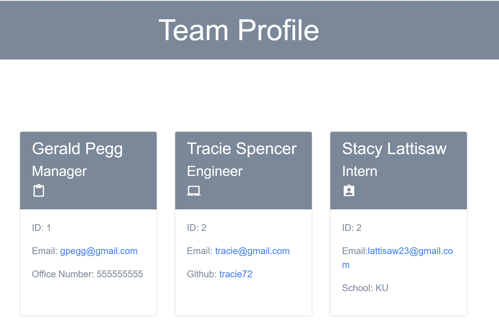
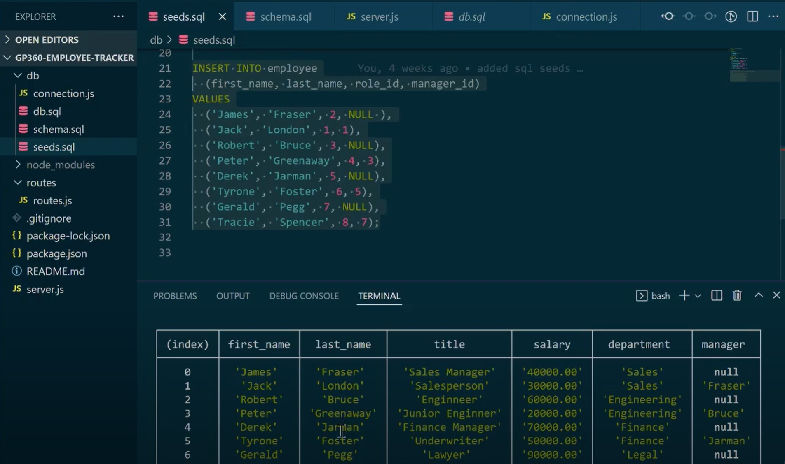
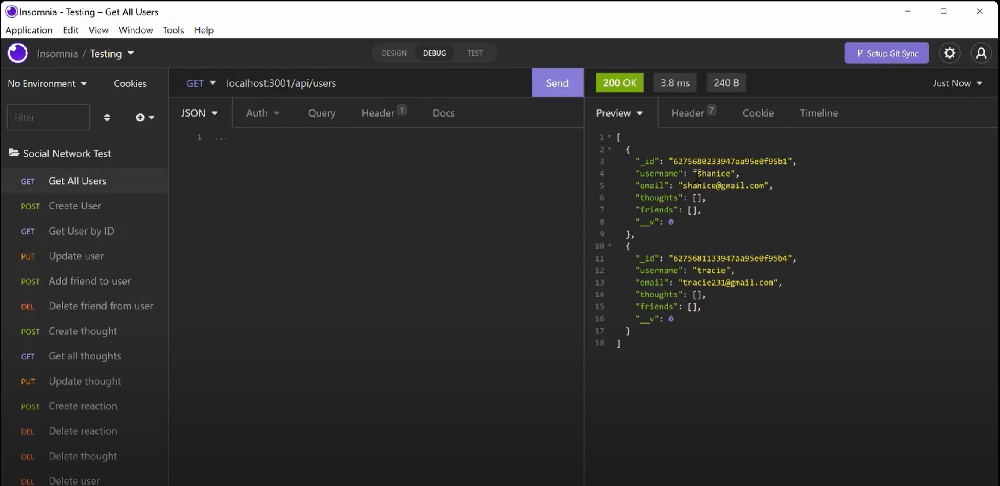
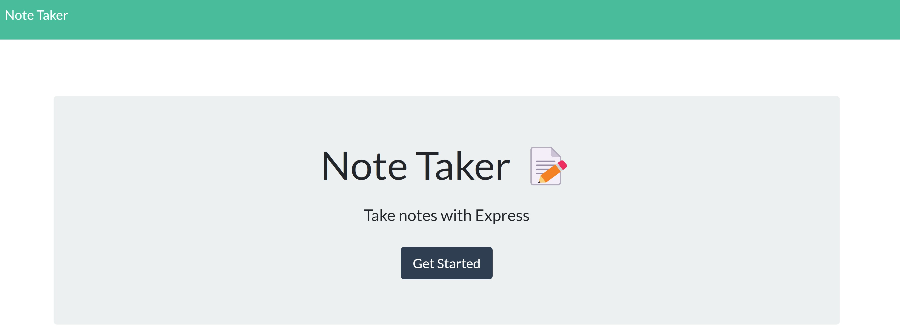
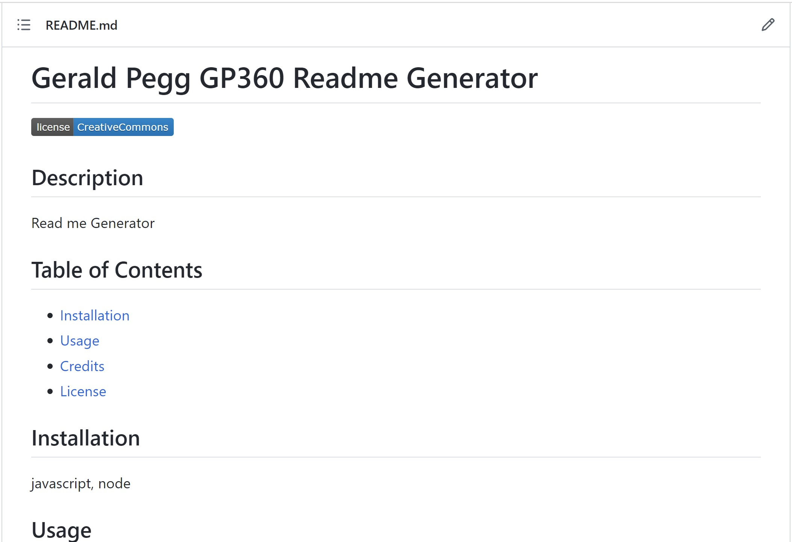
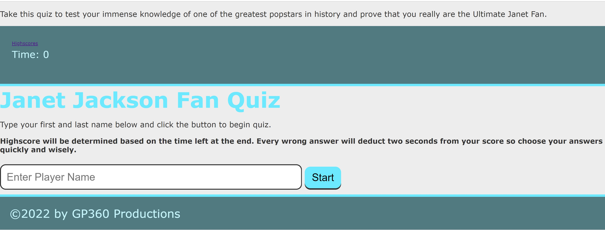
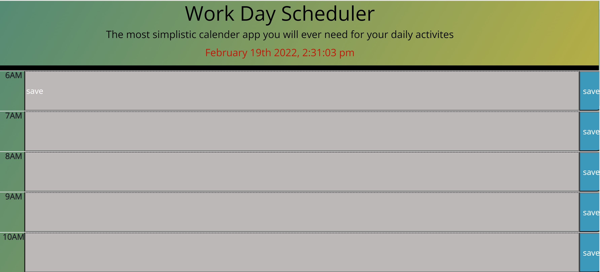
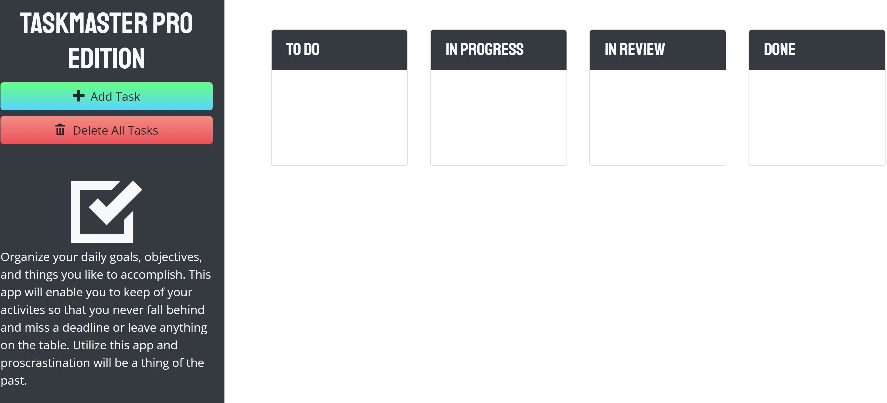

About Me
Hello, I like to start off by saying thank you for taking the time to checkout my work. My name is Gerald Pegg III and I was originally born and rasied in Columbia, Missouri but right now I'm currently based in the Kansas City Area. I was previously working at a Title Agency but decided to switch my career trajectory and pursure a career as a Full Stack Web Developer. I am currently in school through the University of Kansas: Coding Bootcamp program where upon graduation (June 2022) I will be certified as a Full Stack Web Developer. Since the beginning of my journey I have learned a new set of skills that are more closley aligned with my goals of working in a more fufilling and rewarding career. My ultimate ambition is to be able to assit on the development of various web applications; aiding in it's functionality with both dynamically generated and engaging style that is also user friendly. If you like to inquire more information about my services please use the links in the navigation bar on top or scroll to the bottom of the page to see all contact information and I will be more then happy to discuss potential employment oppurtunities. Thank You.
Work
Poke Quiz: Timed Pokemon Quiz
Built With: React.js, Graph, QL, MongoDB HTML, CSS
This is social media like app designed for the user to connect with friends and discuss opinions/react to thier favorite games. This app uses the Steam API to grab information for player data such as the kind of games played, time spent and other user data to showcase to other users. With this app users can showcase their personality through the various games played and their reactions to other users post. At the same time through the friends list users will be able to find other players and build a community to keep discussions going and discover new information for as long as the account is active. This application is deployed using Heroku. Please use the link below to access the deployed site. Thank You
 View Project on GitHub Deployed SitePoke Quiz: Timed Pokemon Quiz
Built With: JavaScript, HTML, CSS - Bulma, jQuery,
Timed pokemon quiz to help users determine which pokemon they represent based on a selection of mutiple choices answers. Script was built using the PokeAPI along with a second server side image to display different attributes types of fire, water, ground, air, etc. along with the final result pokemon image and facts pertaining to the particular chosen creature. These results are generated with a complex data array using JQuery to assign a point value to each answer chosen. Every quiz is randomized and results are saved to local storage to share with others.
 View Project on GitHubGP360 All Star Team Profile Generator
Built With: JavaScript, HTML, CSS, Node.js, Jest Npm
Team Profile Gernerator created using Node.js to display information input to an index.html file located in the distribution directory. This app also has a series of test ran using jest npm in the distribution folder. Please click on the link below to watch a demonstration of how both systems operate. Thank You
 View Project on GitHub Project Demonstration VideoGP360 SQL Database Employee Tracker
Built With: MySQL, Node.js
Employee tracker database built off of MYSQL in combination with node.js and npm inquirer to generate a command line databse. This database displays an employee's first and last name, role, salary, and department names. Databse information is inserted from the seeds.sql file which can then be accessed using node.js to display and update information accordingly. Please see the link to the demonstration video below for details. Thank You
 View Project on GitHub Project Demonstration VideoGP360 No-SQL-MongoDB Social Network API Demo
Built With: NoSQL, MongodDB
GP360-NOsql-Social-Demo app is designed to showcase the backend functionality of a social media like app using No-SQL(mongoDB) with Mongoose as a foundation by connecting through user generated API routes. With this set up once cloned to your local repository you be able to create, update, and react to various post one would make on a platform such as facebook, twitter, or instagram after initiating a server through npm start from your terminal . Please click on the link below to see a demonstration of the functionality of this app and how it creates these instances through testing the various routes with the Insomnia app.
 View Project on GitHub Project Demonstration VideoNote Taker
Built With: JavaScript, HTML, CSS, Express.js, JSON, FS Module,
GP360 Note Taker App is designed to help keep track of your important task, objectives, goals, and daily activites all in one convient location. This app can also be used for students to take notes while in class with an easy to use and bright display to create and delete notes as needed and Keep all of your notes together in one place with the user interface on the side to help you stay organized. This app was created using npm inquirer package, express.js, JSON, and fs to connect pre built front end index and notes.html to the back end api and html routes to create a unique id for each note that is created and deleted. App is deployed to heroku. You may clone the repository from github to see the detailed code functionality. Please click on the link below to see the deployed site from heroku.
 View Project on GitHub Deployed Site on HerokuGP360 README Generator
Built With: JavaScript, HTML, CSS, Node
Professional Read Me Generator Using Node.js to input necessary information pertaining to your application. This app with help save time during the initial development process and can be adjusted to add aditional content such as images and badges on top of the app desciption.
 View Project on GitHubJanet Jackson Fan Quiz DEMO
Built With: JavaScript, HTML, CSS, jQuery
Take this quiz to test your immense knowledge of one of the greatest popstars in history and prove that you really are the Ultimate Janet Fan. This app uses a number of HTML and Javascript functions to keep track and save your score through local storage to compare to other users.
 View Project on GitHubGP360 Ultimate Work Day Scheduler
Built With: JavaScript, HTML, CSS, jQuery, Bootstrap
This app will be the only one needed for your daily activities. The simplistic functionality will help to keep track with percision so that proscrastination becomes a thing of the past. You will be able to save each task to a specific time and the color coding of prior and future daily activites saved to the app will ensure accuracy in having your daily needs met with easy readability.
 View Project on GitHubGP360 Taskmaster PRO DEMO
Built With: JavaScript, HTML, CSS, jQuery, Bootstrap
This app will enable to user to be able to create and remove various task and sort them out based on importance and date for which it was created. Procrastination will be a thing of the past when utilizing this app. You will be able to organize your task with the simplistic prompts making it scalable for all ages.
 View Project on GitHubContact info and Links
Please use the following information below to inquire more about me and my services. Please click on the links provided to view my full linkedin page and resume.